Neste tutorial, vamos explorar como instalar o Langflow em uma VPS utilizando a ferramenta Coolify, uma solução que combina inteligência artificial com desenvolvimento frontend e design AI. Ao final, você terá uma instância funcional do Langflow pronta para uso.
Sumário
- Passo 1: Introdução ao Langflow e Coolify 🚀
- Passo 2: Adquirindo sua VPS na Hostinger 🖥️
- Passo 3: Configurando o Sistema Operacional ⚙️
- Passo 4: Instalando o Coolify 🛠️
- Passo 5: Criando uma Conta no Coolify 📝
- Passo 6: Configurando o Self-Hosting 🏠
- Passo 7: Criando um Novo Projeto 📂
- Passo 8: Utilizando Docker Compose 🐳
- Passo 9: Configurando Variáveis de Ambiente 🌍
- Passo 10: Gerando um Domínio 🌐
- Passo 11: Realizando o Deploy 🚀
- Passo 12: Aguardando o Deploy ⏳
- Passo 13: Acessando o Langflow 🔑
- Passo 14: Conclusão e Próximos Passos 🌟
- FAQ ❓
Passo 1: Introdução ao Langflow e Coolify 🚀
O Langflow é uma ferramenta poderosa para a criação de fluxos de trabalho em inteligência artificial. Ele permite que desenvolvedores criem e gerenciem agentes, utilizando uma interface amigável. A combinação do Langflow com o Coolify facilita a instalação e gerenciamento de aplicações em uma VPS, tornando todo o processo mais acessível, mesmo para aqueles que não têm experiência avançada em Linux.
O Coolify atua como um instalador de pacotes que simplifica o deploy de aplicações, permitindo que você configure o Langflow de maneira rápida e eficiente. Com essa configuração, você poderá aproveitar ao máximo as funcionalidades do Langflow, sem a complexidade de gerenciar manualmente o servidor.
Passo 2: Adquirindo sua VPS na Hostinger 🖥️
O primeiro passo para instalar o Langflow é adquirir uma VPS. A Hostinger oferece uma variedade de opções de VPS, e recomendamos a configuração KVM 2, que é robusta o suficiente para suportar o Langflow. Para adquirir sua VPS, siga os seguintes passos:
- Acesse o site da Hostinger.
- Escolha o plano de VPS que melhor se adequa às suas necessidades.
- Complete o processo de registro e pagamento.
- Após a confirmação, você receberá acesso ao painel de controle da VPS.
Uma vez que você tenha sua VPS, estará pronto para prosseguir para a configuração do sistema operacional.
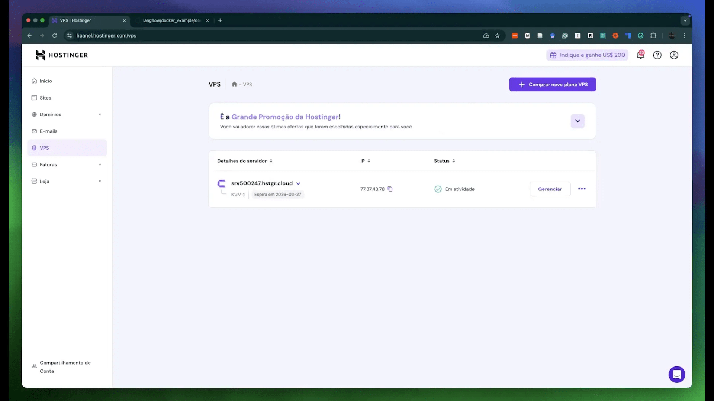
Passo 3: Configurando o Sistema Operacional ⚙️
Após adquirir sua VPS, o próximo passo é configurar o sistema operacional. A Hostinger permite que você escolha entre várias opções de sistema, mas para o Langflow, recomendamos o Ubuntu 24.04. A configuração é simples e pode ser feita diretamente pelo painel da Hostinger.
Siga estes passos para configurar o sistema operacional:
- No painel de controle da Hostinger, localize sua VPS.
- Clique nos três pontos ao lado da VPS e selecione “Configurações do Sistema Operacional”.
- Escolha o Ubuntu 24.04 e clique em “Alterar Sistema Operacional”.
- Crie uma senha de root e confirme a alteração.
O processo de instalação pode levar alguns minutos. Após a conclusão, você estará pronto para acessar sua VPS.
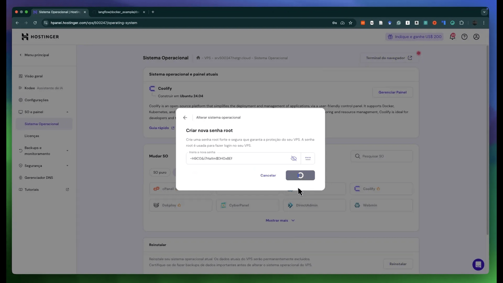
Passo 4: Instalando o Coolify 🛠️
Com o Ubuntu instalado, agora é hora de instalar o Coolify. O Coolify é uma ferramenta que simplifica o processo de instalação de aplicações, como o Langflow. Para instalar o Coolify, siga estas etapas:
- Acesse sua VPS via SSH utilizando o terminal.
- Execute o seguinte comando para instalar o Coolify:
curl -sSL https://get.coolify.io | bash- Após a instalação, você poderá acessar o painel do Coolify pelo seu navegador, usando o IP da sua VPS e a porta 8000.
O Coolify permitirá gerenciar suas aplicações de forma centralizada e eficiente, facilitando o deploy do Langflow.
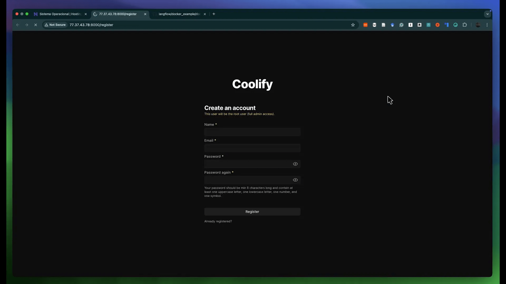
Passo 5: Criando uma Conta no Coolify 📝
Após instalar o Coolify, o próximo passo é criar uma conta para gerenciar suas aplicações. Isso é essencial para garantir que você tenha acesso seguro ao seu ambiente de desenvolvimento. Para criar sua conta, siga os passos abaixo:
- Acesse o painel do Coolify pelo navegador.
- Na tela de login, clique em “Criar Conta”.
- Preencha os campos com seu nome, e-mail e senha. Lembre-se de usar uma senha forte.
- Confirme seu e-mail, se necessário, e faça login.
Com sua conta criada, você estará pronto para iniciar o deploy do Langflow e explorar todas as suas funcionalidades.
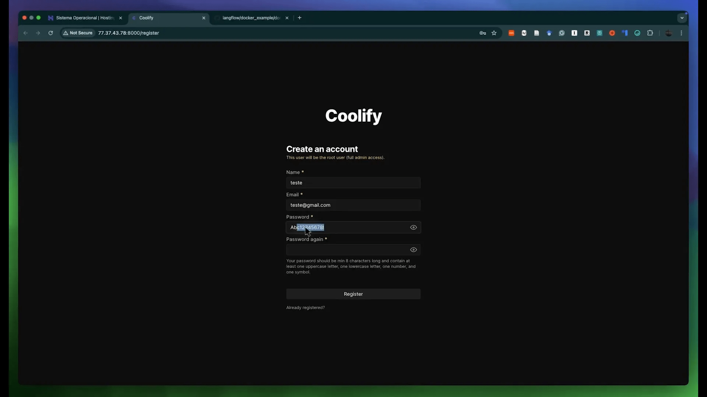
Passo 6: Configurando o Self-Hosting 🏠
Agora que você já tem o Langflow instalado na sua VPS, o próximo passo é configurar o self-hosting. Isso permite que você gerencie suas aplicações no próprio servidor, garantindo maior controle e segurança sobre seus dados.
No painel do Coolify, você verá a opção de “Self-Hosting”. Clique nela e, em seguida, escolha a opção para gerenciar o servidor local. Isso garantirá que todas as aplicações que você criar rodem diretamente na sua VPS.
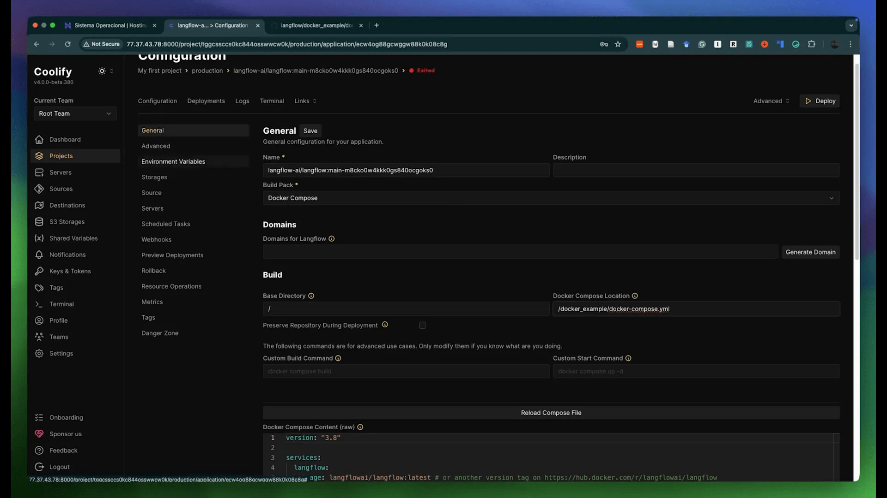
Passo a Passo para Configuração
- Acesse o painel do Coolify e localize a seção de self-hosting.
- Escolha a opção “localhost” para que os projetos sejam executados na sua VPS.
- Certifique-se de que a opção de “Auto-Deploy” esteja desativada, caso deseje gerenciar manualmente o deploy das suas aplicações.
Essa configuração é crucial para evitar que múltiplas instâncias sejam criadas desnecessariamente, o que pode consumir recursos da sua VPS.
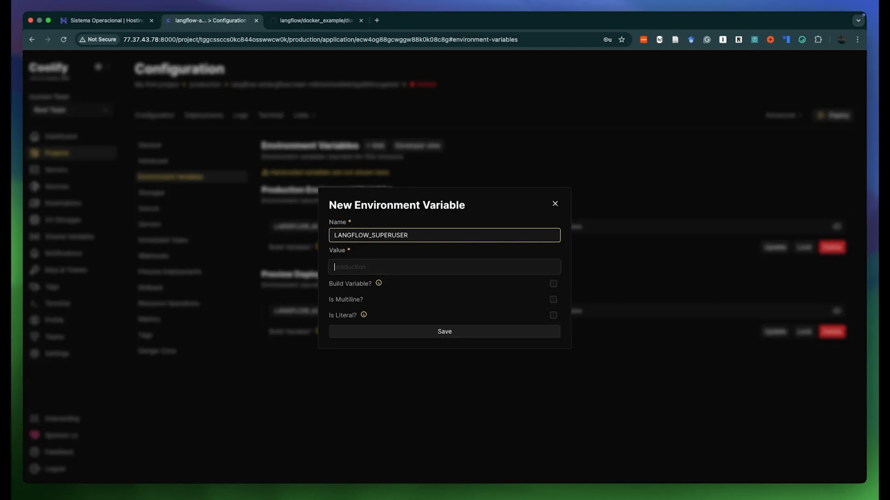
Passo 7: Criando um Novo Projeto 📂
Agora que o self-hosting está configurado, vamos criar um novo projeto no Coolify. Este é o momento em que você poderá começar a desenvolver suas soluções de inteligência artificial, aproveitando a flexibilidade que o Langflow oferece.
Para criar um novo projeto, siga os passos abaixo:
- No painel do Coolify, clique em “Projects” adiciona um Enviroment, clique nele.
- Clique em New em resources, escolha Public repository e Preencha as informações básicas do projeto, como nome e descrição e coloque a url do repo do Langflow.
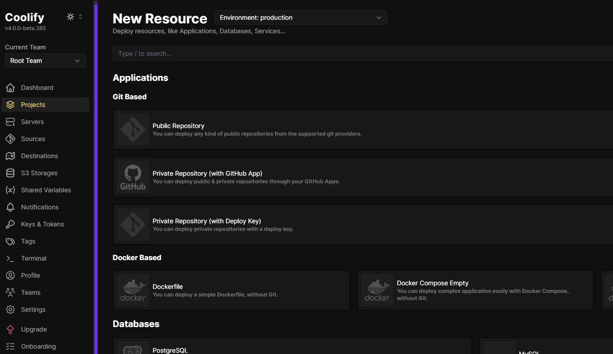
Passo 8: Utilizando Docker Compose 🐳
O Docker Compose é uma ferramenta essencial que facilita a gestão de aplicações Docker. Ele permite que você defina e execute múltiplos containers de forma simples. Para usar o Docker Compose com o Langflow, siga os passos abaixo.
- Copie a URL do repositório do Langflow disponível no GitHub.
- No painel do Coolify, cole a URL no campo designado para o repositório.
- Selecione a opção “Usar Docker Compose” para configurar a aplicação.
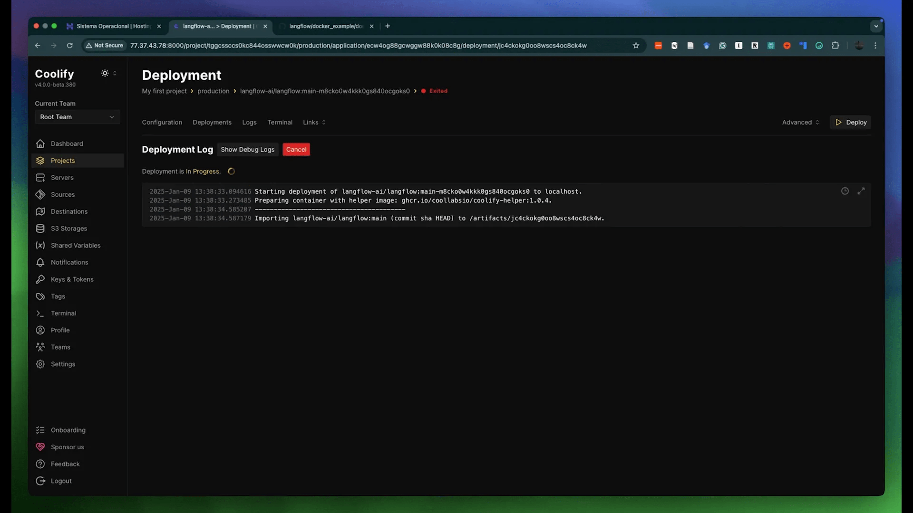
Configurando o Docker Compose
O arquivo Docker Compose deve ser configurado corretamente para garantir que todos os serviços funcionem em conjunto. Você encontrará o arquivo docker-compose.yml no repositório do Langflow.
- Verifique se o arquivo está corretamente referenciado no painel do Coolify.
- Adicione as variáveis de ambiente necessárias, como credenciais e configurações específicas do Langflow.
Com tudo configurado, você estará pronto para iniciar o deploy da sua aplicação.
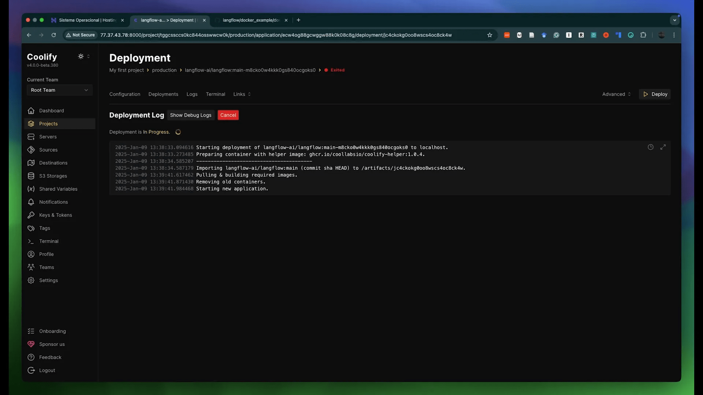
Passo 9: Configurando Variáveis de Ambiente 🌍
As variáveis de ambiente são essenciais para garantir que sua aplicação funcione corretamente e de forma segura. Elas permitem que você armazene informações sensíveis, como senhas e chaves de API, fora do código fonte.
Para configurar as variáveis de ambiente no seu projeto Langflow, siga estes passos:
- Vá até a seção de configurações do seu projeto no Coolify.
- Adicione as variáveis necessárias, como LANGFLOW_AUTLOGIN, definindo como “false”.
- Insira a senha do superusuário, garantindo que ela seja forte e segura.
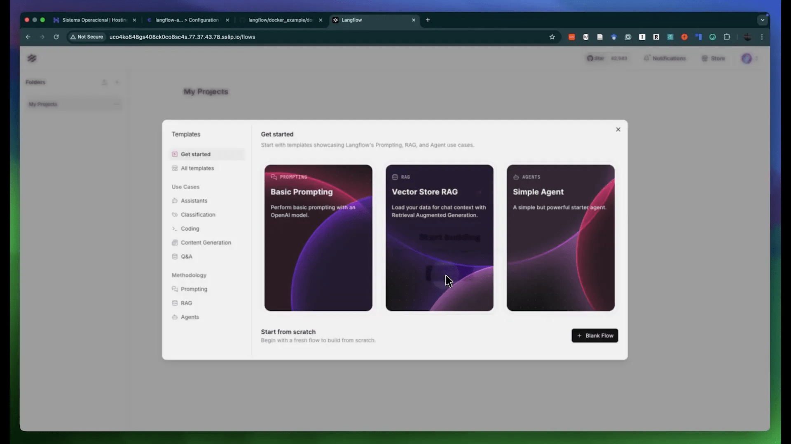
Importância das Variáveis de Ambiente
As variáveis de ambiente garantem que sua aplicação não fique exposta a acessos não autorizados. Além disso, elas permitem que você altere configurações sem precisar modificar o código do projeto.
- Certifique-se de que todas as variáveis estão corretas antes de prosseguir com o deploy.
- Utilize valores seguros e mantenha as senhas em local seguro.
Uma vez configuradas, você estará pronto para gerar um domínio e acessar sua aplicação de forma segura.
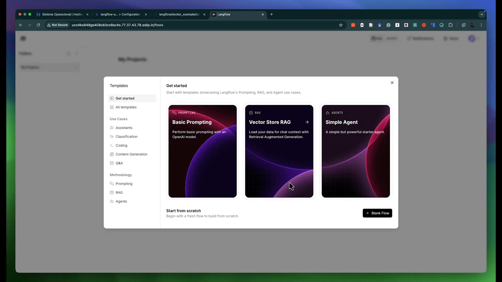
Passo 10: Gerando um Domínio 🌐
Por fim, é hora de configurar um domínio para a sua aplicação Langflow. Isso facilitará o acesso à sua aplicação e proporcionará uma URL mais amigável.
Para gerar um domínio, siga os passos abaixo:
- Acesse a seção de domínios no painel do Coolify.
- Adicione um novo domínio, utilizando o seu endereço IP ou um domínio personalizado, se você já tiver um.
- Configure as entradas de DNS, se necessário, para garantir que o domínio aponte corretamente para sua VPS.
Considerações Finais sobre Domínios
Ter um domínio personalizado não apenas torna sua aplicação mais profissional, mas também facilita o acesso para usuários e desenvolvedores.
- Verifique se o domínio está ativo e acessível na internet.
- Considere usar serviços de HTTPS para garantir a segurança das conexões.
Após a configuração, sua aplicação Langflow estará acessível através do domínio configurado, permitindo que você comece a desenvolver e testar suas soluções de inteligência artificial.
Passo 11: Realizando o Deploy 🚀
Agora que você configurou todas as variáveis de ambiente e o Docker Compose, é hora de realizar o deploy do Langflow. Este é um passo crucial, pois é quando sua aplicação começa a tomar forma e se torna acessível.
Para iniciar o deploy, siga estas etapas:
- No painel do Coolify, localize o projeto que você criou.
- Clique no botão “Deploy”.
- Aguarde enquanto o processo de deploy é realizado. Isso pode levar alguns minutos, dependendo dos recursos da sua VPS e da complexidade do projeto.
Uma vez que o deploy for concluído, você verá uma mensagem de sucesso, indicando que o Langflow está agora rodando na sua VPS.
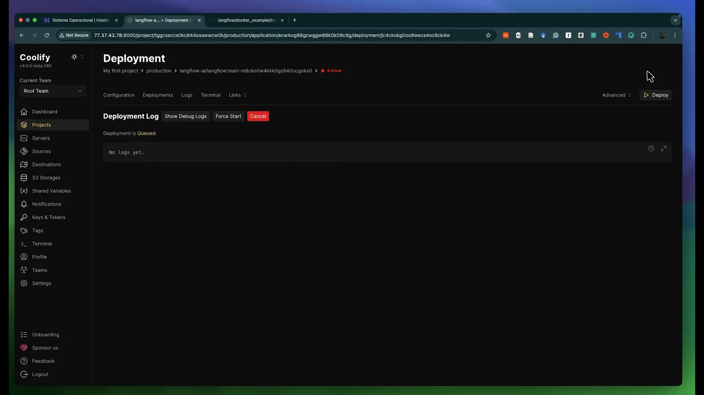
Passo 12: Aguardando o Deploy ⏳
Após iniciar o processo de deploy, é importante ter paciência. O Coolify irá configurar todos os serviços necessários, e isso pode levar algum tempo.
Durante esse período, é recomendável verificar o log do deploy para identificar possíveis erros ou mensagens de sucesso. Para isso, siga os passos abaixo:
- Na seção de “Logs” do painel do Coolify, selecione o projeto que você está implantando.
- Observe as mensagens que aparecem. Se tudo estiver correto, você verá mensagens indicando que os serviços estão sendo iniciados.
- Se houver algum erro, leia a mensagem atentamente para entender o que pode ter dado errado.
Uma vez que o deploy seja concluído com sucesso, você estará pronto para acessar o Langflow.
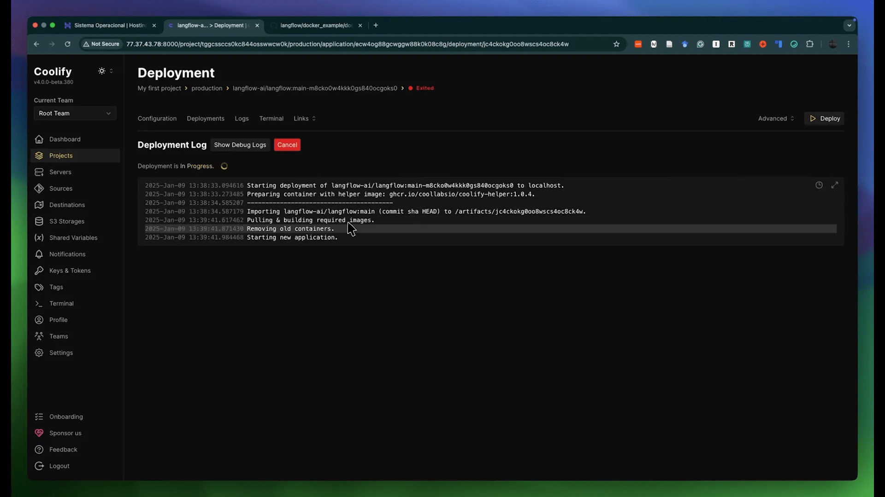
Passo 13: Acessando o Langflow 🔑
Com o deploy concluído, o próximo passo é acessar a aplicação Langflow. Você pode fazer isso pelo endereço IP da sua VPS ou pelo domínio que você configurou anteriormente.
Para acessar, siga estas etapas:
- Abra o navegador e digite o endereço IP da sua VPS seguido da porta 8000 (exemplo: http://seu-ip:8000).
- Se você configurou um domínio, digite o domínio que você criou.
- Na tela de login, insira o nome de usuário e a senha que você criou anteriormente.
Com isso, você terá acesso ao Langflow e poderá começar a criar seus fluxos de trabalho de inteligência artificial.
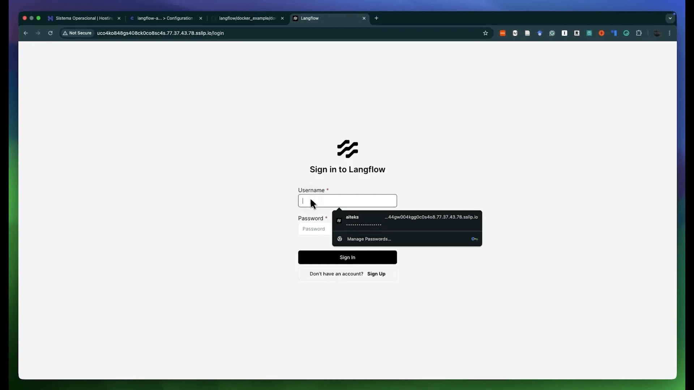
Passo 14: Conclusão e Próximos Passos 🌟
Parabéns! Você conseguiu instalar e configurar o Langflow na sua VPS com Coolify. Agora, você pode começar a explorar todas as funcionalidades que o Langflow oferece para o desenvolvimento de soluções em inteligência artificial.
Para os próximos passos, considere:
- Explorar a documentação do Langflow para entender melhor suas funcionalidades.
- Começar a criar seus próprios fluxos de trabalho e agentes.
- Participar de comunidades online para trocar experiências e aprender com outros desenvolvedores.
Lembre-se de que a prática é fundamental para dominar o uso do Langflow e integrar a inteligência artificial ao desenvolvimento frontend e design AI.
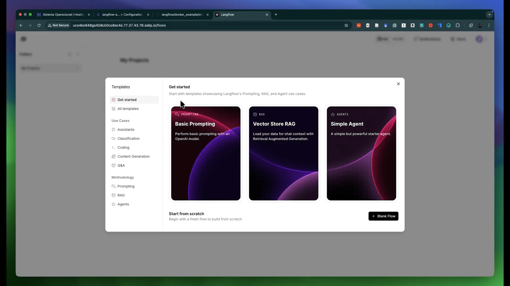
FAQ ❓
1. O que é o Langflow?
O Langflow é uma ferramenta que permite criar fluxos de trabalho em inteligência artificial, facilitando a criação e gerenciamento de agentes e ferramentas.
2. Por que usar o Coolify?
O Coolify simplifica a instalação e gerenciamento de aplicações, tornando o deploy mais acessível, mesmo para aqueles sem experiência em Linux.
3. Quais são os requisitos para rodar o Langflow?
Um servidor VPS com recursos suficientes, preferencialmente com Ubuntu 24.04, e a instalação do Coolify.
4. Posso usar o Langflow para projetos comerciais?
Sim, o Langflow pode ser utilizado para desenvolver soluções comerciais, desde que você siga as diretrizes de uso e licenciamento.
5. Como posso melhorar o desempenho do Langflow na minha VPS?
Considere aumentar os recursos da sua VPS, como CPU e RAM, e otimize os fluxos de trabalho que você cria no Langflow.